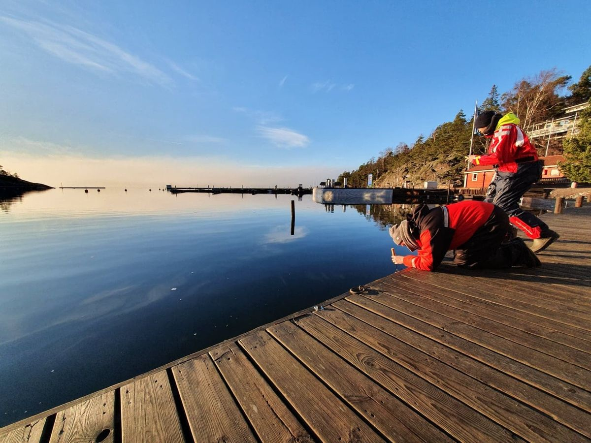
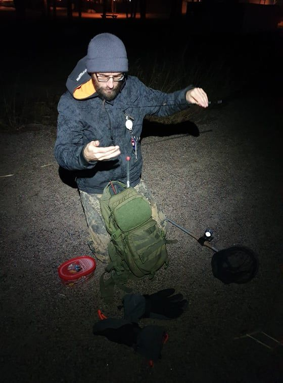
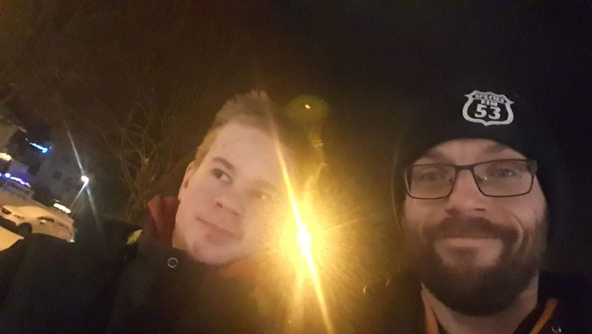
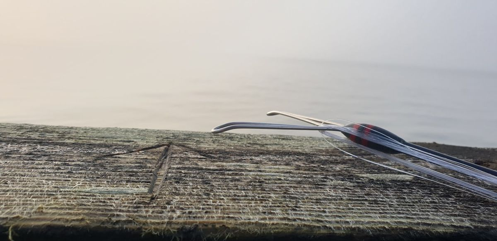
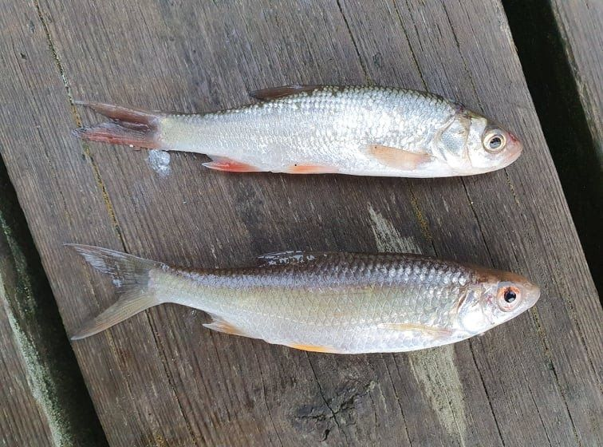
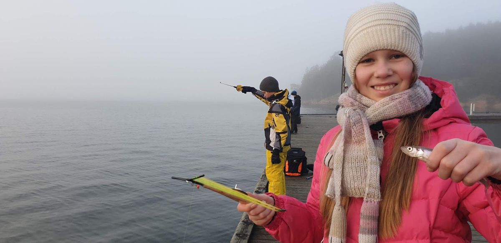
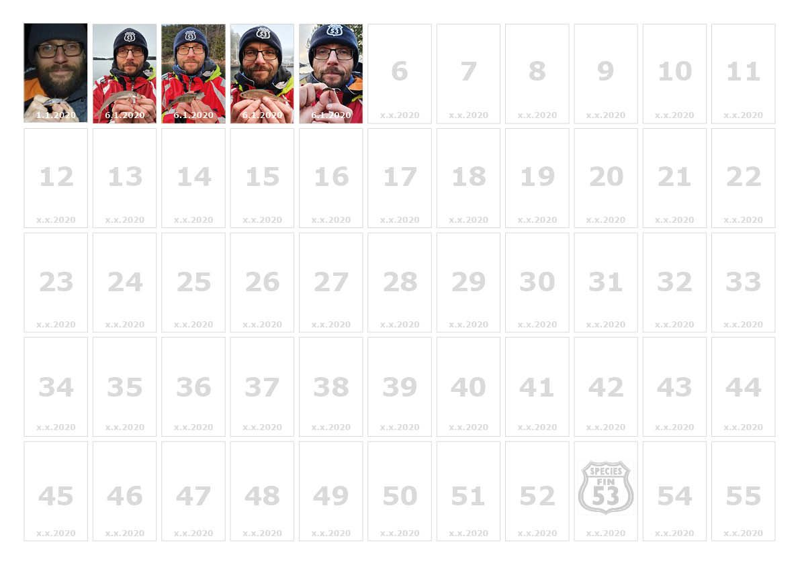

Blogitekstit · Tammikuu 2020
Vuoden ensimmäiset kalapäivät - lajit 1-5
Kaupallinen yhteistyö Paitakulman kanssa.


Upeaa alkanutta vuotta 2020 kaikille teille blogini seuraajille. Alkanut vuosi tulee pitämään sisällään yritykseni rikkoa ystäväni Timi Laitisen nimissä oleva lajikalastuksen Suomen ennätys. Tämä tulee vaatimaan työtä ja kalastustunteja.


Vuoden ensimmäinen kalareissu suuntautui 1.1.2020 keskiviikkona Helsingin Vuosaaren rannoille. Kova tuuli rajoitti kalastamisen vain muutamaan spottiin. Näissä spoteissa oli kaloja, mutta ne pitivät suunsa kiinni.
Lopulta vanhalta mutumestalta löytyi ottihalukas kolmipiikki ja siitä tuli myös tämän vuoden ensimmäinen pyydystämäni kala.
Mitä jäi ensimmäisen lajin pyyntireissusta mieleen: haastava keli, suut kiinni pitävät kalat, välinetestit. Ensimmäinen laji, vuoden eka päivä ja reissu. Kausi avattu. Seuraavaa reissua odotellessa.
- Retki alkoi 1.1.2020 klo 20:30
- Retki päättyi 1.1.2020 klo 23:29
- Lajit: kolmipiikki
Pikayritys madejahtiin
Tein vielä toisen pikareissun Espoolaiselle järvelle, jonka rantamatalasta yritin etsiä mateita. Lopputulos jäi yhtä laihaksi kuin kerran keittämäni jauhelihakeitto, vettä oli enemmän kuin sattumia ja maku myös sen mukaista.
Nollat tauluun, sainpa olla ulkona ja Nemo sai hieman pidemmälle suuntautuneen iltalenkin.
- Retki alkoi 3.1.2020 klo 21:45
- Retki päättyi 3.1.2020 klo 23:45
- Lajit: 0
Loppiaisen härkäsimppujahti


Perjantaina menin lähiparkkipaikalle Justusta ja hänen äitiään Maria vastaan. Hienoa, että vanhemmat tukevat poikaansa hienossa harrastuksessa ja päästävät sekä ennen kaikkea luottavat meihin vanhempiin reissulle lähtijöihin.
Itselläni on tavoitteena levittää fongailun ilosanomaa ja järjestää tällä teemalla kimpparetkiä ympäri Suomen. Tarjosin parivaljakolle teet ja kerroin samalla hurjista suunnitelmistani tälle vuodelle.
Illalla saunottiin Justuksen kanssa, muisteltiin Kalamaratoneja ja mietittiin tulevia koitoksia. Toivottavasti tämä nuori Fongari löytäisi itselleen tiimin myös Helsingin kisaan.
Heräsin loppiaisaamuna ennen kellonsoittoa, kännykän screenille piirtyi pikseleistä kellonaika 4:50. Herätyskello soisi vasta 40 minuutin päästä. Päätän kömpiä keittiöön kahvinkeittoon ja syömään aamupalaa. Myös meillä yökylässa oleva Justus heräsi sohvalta sekä koiramme Nemo osoitti olevansa elossa tuhahtamalla tuttuun tapaansa. Aamukahvien keittämisen jälkeen laitoin Timille viestiä:
"Huomenta, saa tulla aikaisemmin jos aamuhommat ok. Täällä molemmat hereillä."
Tunnetusti Timikin on valmiina hyvissä ajoin ja kuittaus tulikin nopeasti.
"Viisi minuuttia niin lähden ajamaan."
Myös isäni Matti oli lähtövalmis. Lopulta alkuperäisestä suunnitelmasta poiketen lähdimmekin jo kuudelta liikenteeseen.
Matka Airiston aalloille meni leppoisasti varsinkin kun Yle Radio Suomesta tuli Juha Laaksosen tekemä juttu suomessa esiintyvistä simpuista. Laaksosen haastateltavana oli minulle ja isälleni tuttu Luonnonvarakeskuksen tutkija Ari Saura. Kuuntele lähetys tästä.

Oletko Airiston laiturilla kalastaessasi ihmetellyt, mitä kaiverretut nuolet reunapuussa merkkaavat? Minulle tiesi Petri kertoa, että ne on silakkalitkaajien merkintöjä kohdista joissa menee laiturin kiinnitysvaijerit. Keli helli. Pilvien takaa paistoi aurinko ja meri oli täysin tyyni.
Tämän tiedon myötä voi unohtaa vaijeri kontaktit ja pilkkien tai litkojen menettämiset. Hivenen ennen meitä oli paikalle saapuneet Petri ja Miika. Norsseja on noussut, kertoivat molemmat. Simput olivat heidänkin pilkit kiertäneet.


Laiturilla saapui joukkoamme täydentämään Olli-Pekka Turunen lastensa ja heidän kaverinsa kanssa. Normaaleilla pilkkivavoilla pojat nappasivat nopeasti kuorepisteet ja retkemme ainut nainen Ronja veti vieressä tyhjää.
Kävin moikkaamassa isääni sekä Timiä laiturin alkupäässä. Kurkkaus iskän saalispussiin ja yllätykseksi särkien joukosta löytyi myös pieni säyne. Timi taas jaksoi taiteilla vedenalaisen kameran kanssa ja yritti sillä löytää simppuja. Lopputulos jäi laihanlaiseksi.


Tunnelmaa tiivistämään saapui Korppoon suunnalta usva joka peitti upean merimaiseman, loppu päivä pilkittiinkin usvankeskellä.
Päätin jeesata ja annoin tapsipilkkillä varustetun haarukkavapani hänelle, opetin sitä käyttämään ja havaitsemaan kaikuluotaimesta mistä näkee kalojen olevan pilkin luona. Muutaman harhaiskun ja kelauksen jälkeen tapsimorrin päässä roikkui kuore. Ilo paistoi tytön ja hänen isän silmiltä.


Oli aika grillata ja juoda isäni Matin keittämät nokipannukahvit. Siinä kahvinjuonnin lomassa Petri kertoi, että viereisen puron levennyksestä voisi nousta kymmenpiikki lajipisteeksi. Justuksen lirkki lainaan, kymmenpiikki ylös.
Lajipisteenä kymmenpiikki oli vasta viides, kun mukana olevalla Miikalla lajeja on kasassa jo huimat kaksitoista. LPR (Lajia Per Reissu) lukemat minulla 1,67 ja Miikalla 2,40.
LPR = Kauden aikana saadut lajit / koko kauden kalapäivien määrällä.
Mitä suurempi luku sitä parempi. Lajia Per Reissu lukema.
Hauska nähdä mihin tämä lopulta päätyy kun kalenteri vuosi on kalasteltu ympäri Suomen.
Kohti uusia seikkailuita - tuuli pilaa suunnitelmat
Ennen starttia kokeilimme vielä löytyykö rantakivikosta mustatokkoja... ei löytynyt.
Hivenen ennen kolmea starttasimme auton ja lähdimme ajamaan kohti Padvan niemeä. Toiveissa oli, että keli sallisi piikkikampelan sekä normi kampelan lirkkimisen yön pimeydessä. Tästä ei sen enempää, kova keli pilasi yrityksen ja saalis jäi saamatta.
Matkalla kohti kotia kuulimme ettei Airistolle jääneet Miika eikä Petri olleet saaneet härkäsimppua saaliikseen. Harmittava takaistu heti alkuvuoteen, onneksi simputusaikaa on jäljellä useampi kuukausi.
Reissu oli saada karun lopun kun Ruoholahden valoissa painoin vahingossa autostartin sammuttamisen napin sijaan takaluukun avausnappia. Siinä sitten liikennevaloissa pomppasin nopeasti pois sulkemaan luukun.
Nyt jos kyydissä olisi ollut koirani Nemo, olisi saatu aikaiseksi pieni liikennekaaos Länsiväylälle. Loppu hyvin, kaikki hyvin. Justus tiputettiin Kampin metroasemalla ja Timi kävi opastamassa perille bussiterminaaliin.
Seuraava pidempi reissu on suunnitteilla helmi-marraskuun vaihteeseen jolloin kutsuu Kokkola sekä Lapinlahti. Nyt toivotaan, että talvi saapuisi ja jääpeite sen mukana.
- Retki alkoi: 6.1.2020 klo 5:45
- Retki päättyi:6.1.2020 klo 20:40
- Lajit: kuore, ahven, särki, kymmenpiikki (säyne, kolmipiikki)


Seuraa ennätyksen etenemistä
Pidän kirjaa lajilistasta ja tarkemmasta retkidatasta Google -taulukossa, joka löytyy jokaisesta ennätysyrityksen postauksesta. Tästä linkistä taulukko avautuu uuteen ikkunaan.
Seurantatilanne löytyy myös blogini oikeasta yläreunasta.
Vuoden aikana ennätysyrityksessä kulkee mukaan myös tämä kalataitelija-graaffikko Sakke Yrjölän suunnittelema SPECIES FIN 53 -merkki.
Paitakulmassa painatin pipoon ja lippikseen saman merkin. Tavoitteeni on saada aikaiseksi 53 saaliskuvaa tekstin alussa tekemääni taulukkoon joissa kaikissa kuvissa näkyisi tuo kyseinen tunnus.
Paitakulma on Suomalainen perheyritys, joka haluaa panostaa laatuun ja asiakastyytyväisyyteen. Tutustu yrityksen palveluihin tästä.